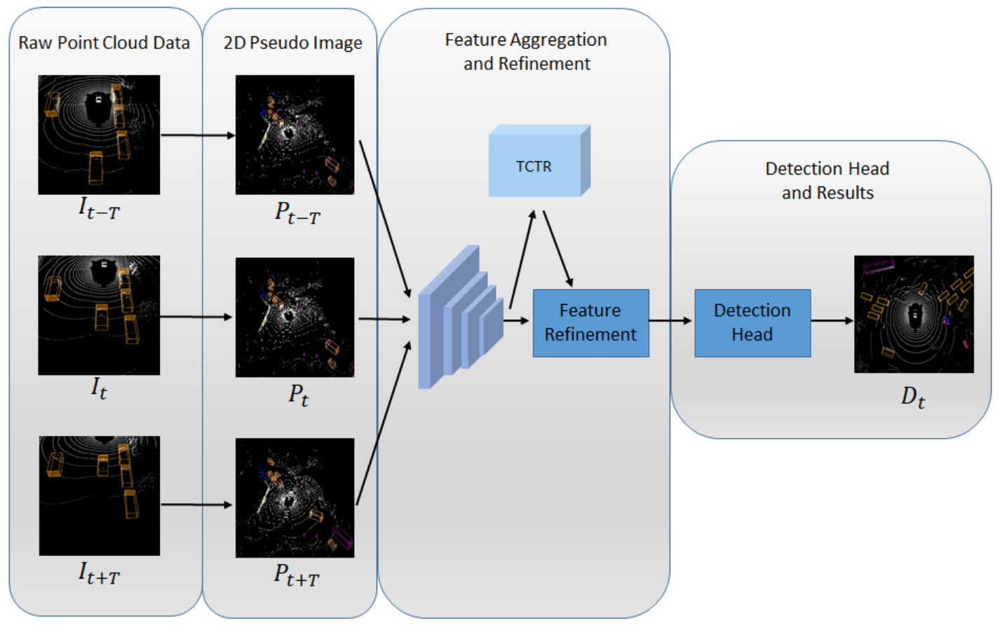

Temporal-Channel Transformer for 3D Lidar-Based Video Object Detection in Autonomous Driving¶
Most current 3D object detection algorithms only model single frame data, ignoring the temporal information of the sequence of data. In this work, the authors propose Temporal-Channel Transformer to model the spatial-pyramid domain and channel domain relationships for video object detecting from Lidar data. It has two main components, 1) a data enhancement module that integrates the most relevant information from the context frames to the target frame based on transformer in a voxel-wise manner, 2) a data refinement module that filters out object-irrelevant information based on the gate mechanism.
Experimental results show that Temporal-Channel Transformer achieves the SOTA performance in grid voxel-based 3D object detection on the nuScenes benchmark.
{kind=link}
Method¶
The raw Lidar data generated at each time step is a sparse and irregular collection of point clouds frame, in which a point is represented as \(\{x, y, z, r\}\), containing 3D space location information \(\{x, y, z\}\) and reflection magnitude \(r\). Denote the raw point clouds frame at time step \(t\) as \(I_t\). This work focuses on detecting objects at \(t\) with a set of continuous frames \(\mathcal{I} = \{I_{t-T}, \dots, I_{t-1}, I_t, T_{t+1}, \dots, I_{t+T}\).